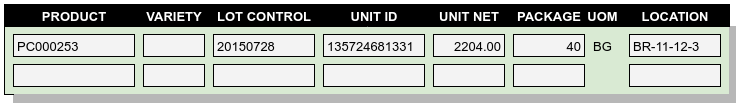
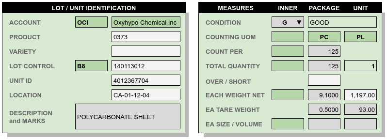

Document Lines Detail¶
Document lines provide the transactions for inventory control and location tracking. These lines contain identifying, control, descriptive, and quantitative information for each product, lot, and (optionally) storage unit in a facility.
A subset of document line columns is used for summary lines entry, as shown in the following view.
The sumary document line entry uses product record default values for most values. When received goods require specific information different from these defaults, a document line detail view is required.
Document line detail entry is divided into two sections: descriptive entries, and quantities. The following sections of this topic give examples of summary line entries, and corresponding detail entries which add to individual lines.
Note
The summary and detail lines which follow use the following conventions:
- Yellow – highlights summary lines which are selected for detail display.
- Dark Green – indicates entries which are pulled from the Product, or which could not be changed in this example.
- When INNER UOM is left blank on a product, INNER quantities will not be enterable on transaction lines.
- Dark Gray – indicates default values which could have been changed if need be, but were not changed in the displayed example.
Unit Weights and Measures¶
The classic individual unit entry is roll paper, where accurate unit weights and measures are required for shipping and billing. Below is an entry lines list, where each roll has a unique foot linear measure and a unique net weight.

The details for one line are shown below. Every entry for the roll was available in the summary line entry, and no changes were made in the detail. The roll net weight of 2611 Lbs, entered in the summary list view, is close to a default weight of 2616.38 lbs, calculated from the content value of .58 lbs/ft.

Partial and Mixed Pallets¶
When goods are handled pallet-in, pallet-out, tracking mixed pallets may seem unnecessary. However, a number of circumstances result in mixed units or pallets in every warehouse:
- Part of a unit may have damage. Damaged and whole goods must be listed with separate content lines.
- If damaged content is replaced with make-up goods from a different lot, then separate content lines are needed to track the two lots.
- Pallet units may contain lot remainders transferred in from a production line or even from another distribution center.
- Multiple products may be shipped on mixed pallets to reduce shipping costs. The warehouse may choose to lump the goods and not segregate them if picking from mixed pallets is not problematic.
- Inconsistent pallets may be received due to storage requirements in previous warehousing.
- Stripping a floor-loaded container may result in a hand-full of remainders for multiple products or lots, which get lumped on a mixed pallet.
We talk about not having mixed pallets when actually we do have them.
By default, webWARES combines unit and content data in a single entry line. In contrast, mixed pallet units start with a parent line that omits content values for Product, Variety, or Lot Control, but includes a required parent UnitID. (Without the UnitID, there would be no way to distinguish a mixed unit from a series of partial units.)
Subsequent child content lines will include Product, Variety, or Lot Control values, followed by the UnitID. Repeating the UnitID triggers the association of the mixed child content to the parent “unit only” line.
Tip
In addition to sharing UnitID and Location, mixed unit and content lines have the same LineKey (see Line Data not Displayed). Every document line has an entry for LineKey, while the UnitID value is optional on other lines and is surely missing with bulk entries.

Repeating the UnitID causes the following changes to line detail values.
- Child content Location is filled from the parent unit and protected.
- Count Per on child content is cleared and protected; this does not apply to mixed pallets.
- Unit Tare Weight and unit Quantity are cleared and protected on child content lines.
- Entries for unit partial weights and partial measures are auto-calculated based on the content quantity, and these entries are filled and protected.
In addition, the parent unit line will have the following entries:
- The unit Quantity, which is always filled/protected, will show “1”.
- The unit Tare Weight will be taken from the product for the first child content line.
- The unit Net Weight, Volume, and Quantity entries will be the sum of these entries from the child content lines.
- The parent unit line entries for Product, Variety, and Control will be cleared and protected.
Detail for the highlighted line is shown below. Every entry but one, the Condition, came from either product default values or the summary line entry.

Tip
There seem to be two entry procedures for lines, but actually:
- Entering two consecutive content lines with the same UnitID will trigger a question, “Do these entries belong to the same unit? (Yes/no).” Answering “Yes” will create the parent unit line and update the child content lines as described previously.
- Enterig a unit record without product content information, followed by child content records repeating the UnitID, will produce the same result without having to ask the question.
Unit Tracking¶
Where each unit of a truck load is tied to unique information, the units must be entered separately in the lines summary. Values which make individual line entries necessary include varying Lot Control numbers and Location, individual Unit ID, and varying weights or measures per unit. An example truck load unit entry is shown in the following figure.

The details for the highlighted line are displayed to demonstrate the entries which commonly change from unit to unit. Each unit in the example has a unique NetWeight, for example.
Tip
Sometimes unique values are required for both NetWeight and GrossWeight, but the program does not store gross weight. Since gross weight is by definition greater than net weight, entering gross weight in the unit TareWeight field will calculate the TareWeight as the difference between the two weights. Then the gross weight can be derived from the two entries at any later time.
Bulk Versus Unit Entry¶
Many truck loads consist of 20 or more units, all uniform, to be stored in a single bay location and moved load-in load-out. The work of entering each unit on a line is unnecessary in that case. In the previous example, if the units had been uniform, the load could have been entered as a single bulk line as shown below.

Tip
On bulk entry lines, the line detail will show the unit count as the content Quantity divided by the content Count Per, plus 1 for any remainder. Where the content Count Per is blank, the unit count will be blank also.
Using Line Detail Entries¶
Line detail entries are necessary when entering unique values which are not visible in the summary. Specific cases where this might occur are listed here.
Damaged goods must be entered in separate content records which are marked in the details.
Marks, variable descriptions, or special lot notes are entered in details.
Broken cases or sampled bags should be entered separately, noting the shorted inner quantities.
Content count discrepancies on receiving are entered in the Over/Short value, as positive or negative numbers. Over/Short applies to content only, and only on receipt, where content is a visually countable quantity (cartons, cases, bags, etc.).
Variable tare weights or gross weights are entered in the details view, unlike consistent tare weights which are entered on the product setup.
When unit weight varies, linear counts or volumetric measures probably vary too. This is especially important with hazardous materials, where both weights and volume measures are used on the Bill of Lading.
Account is inherited from the document header for all positive-quantity lines (receipts and adjustments). An error is generated when a product record matching the Account, Product, and Variety does not exist.
Shipments withdraw only from lots belonging to the document header account, and shipment quantities are automatically negated.
Adjustments may withdraw from any lot regardless of the account in the document header, so that adjustments can effect ownership transfers. In ownership transfers, negative-quantity adjustment lines deduct lots from one owner account and positive lines add to the owner account listed in the adjustment header.
To enter an ownership transfer adjustment,the line details view is used to choose the original Account to deduct from, and then the product and lot. When a lot account does not match the document header account, the subsequent line quantity entries will be negated, just as quantities are for a shipment.
Document Line Requirements¶
Transactions are entered by line. The following rules apply to transactions:
- Each line references a single product/variety, lot control, unit identifier, and locator value.
- Quantities are signed (+/-) to indicating the effect of the transaction on inventory.
- Lines contain either Reserved or On-Hand quantites, but not both.
- The document status and the data content of a line determine whether the entry quantity will be Reserved or On-Hand.
- A condition code is required for each entry line. The default is G(ood), see Unit Condition Codes.
| Column Name | Expected | Inbound | Received | Reserved | Allocated | Shipped |
|---|---|---|---|---|---|---|
| SEQUENCEKEY [2] | sequence | sequence | sequence | sequence | sequence | sequence |
| UNITIDENTIFIER | [3] | [3] | [3] | [3] | ||
| TRANSACTIONTYPE | 3 or 5 | 3 or 5 | 3 or 5 | 4 or 5 | 4 or 5 | 4 or 5 |
| TRANSACTION [1] | (header) | (header) | (header) | (header) | (header) | (header) |
| LINEKEY [2] | sequence | sequence | sequence | sequence | sequence | sequence |
| STATUS | 1 | 2 | 3+ | 1 | 2 | 3+ |
| POSTDATE | now | now | now | now | now | now |
| LOCATION | directed | (unit) | (unit) | |||
| ACCOUNT | (header) | (header) | (header) | (header) | (header) | (header) |
| PRODUCT | required | required | required | required | required | required |
| VARIETY | required | required | required | required | required | required |
| CONTROLCODE | required | required | (unit) | (unit) | ||
| CONTROL | required | required | (unit) | (unit) | ||
| DESCRIPTION | [product] | [product] | [product] | [product] | [product] | [product] |
| CONDITION | required | required | (unit) | (unit) | ||
| UNITUOM | (product) | (product) | (product) | (product) | (product) | (product) |
| UNITNET | [product] | [product] | [product] | [product] | (unit) | (unit) |
| UNITTARE | [product] | [product] | [product] | [product] | (unit) | (unit) |
| UNITSIZE | [product] | [product] | [product] | [product] | (unit) | (unit) |
| UNITSTACK | [product] | [product] | [product] | [product] | (unit) | (unit) |
| CONTENTUOM | (product) | (product) | (product) | (product) | (product) | (product) |
| CONTENTONHAND | required | required | ||||
| CONTENTRESERVE | required | required | required | required | ||
| CONTENTNET | [product] | [product] | [product] | [product] | [product] | [product] |
| CONTENTTARE | [product] | [product] | [product] | [product] | [product] | [product] |
| CONTENTSIZE | [product] | [product] | [product] | [product] | [product] | [product] |
| OVERSHORT | ||||||
| INNERUOM | (product) | (product) | (product) | (product) | (product) | (product) |
| INNERONHAND [4] | [product] | [product] | ||||
| INNERRESERVE [4] | [product] | [product] | [product] | [product] | ||
| INNERWEIGHT [4] | [product] | [product] | [product] | [product] | [product] | [product] |
| INNERSIZE [4] | [product] | [product] | [product] | [product] | [product] | [product] |
| [1] | TRANSACTIONTYPE and TRANSACTION numbers are copied from the document header. |
| [2] | (1, 2) A LINEKEY is assigned to track posting to a product/variety/control lot combination on reserved quantities. Where unit identifiers are required, and the quantity is on-hand, then LINEKEY is programmatically expanded to unique SEQUENCEKEY entries for each unit transaction line. |
| [3] | (1, 2, 3, 4) UNITIDENTIFIER entries are not required to be unique. Unit numbers repeat where skids which are sequentially numbered 1, 2, ... in a production batch, or where materials are loaded on prenumbered reusable skids in a closed manufacturing environment. Where goods are fungible, UNITIDENTIFIER entries are not even required. |
| [4] | (1, 2, 3, 4) If a product INNERUOM is null, associated INNER entries are prohibited. Otherwise, INNERWEIGHT and INNERSIZE default to product values. |
Note
- (header), (product), and (unit) parentheses indicate values copied from the respective source without change.
- [product] brackets indicate the source of a default value.
Warning
Inbound units can be reserved by outbound shipments. Upon receipt a reserved unit might be unavailable due to condition. A method for resolving this quandry is required.
Line Data not Displayed¶
Some document line data may not be included in a view, but is required for program operation. These columns are described in the following list.
SequenceKey – The program assigns a unique key to each document line.
TransactionType and Transaction – are required back references from the document header, and these columns organize lines in lot or location detail displays.
LineKey – is necessary to maintain the original document structure for for shipping and receiving documents. Pick tickets are presented with lines sorted by Location, but Warehouse Receipts and Bills of Lading are sorted in the original document order, that is, by Linekey.
LineKey tracks the initial entry sequence of unit lines in a document:
LINEKEY = ( TRANSACTION * 1000 ) + LINEPOS
Where units (pallets) with mixed lots are received or shipped, or where fungible order quantities are expanded to be filled by multiple unit picks, several transaction lines with unique SequenceKey and varying Location entries may have the same LineKey.
Status – is determined from assigning unit numbers when unit tracking is used, from picking, staging and loading activities, and from releasing completed documents, applying charges, and inviocing.
PostDate – is copied from the transaction header and applies to all lines in a document. The Postdate of a document should be finalized at the date and time that the warehouse signs a receipt or a carrier signs for a shipment.
ContentOnHand, InnerOnHand, ContentReserve, InnerReserve – The user interface shows Content and Inner Quantities, but these quantities are actually represented in the data as either _Reserve or _OnHand depending on the line status. The appearance of a single data field is deceptive from the standpoint of data definition.
UnitUOM, ContentUOM, and InnerUOM – are display-only values copied from the current product record.
Document Lines Column Data¶
Documentation resources include the data column definitions for Lot Transaction Lines.